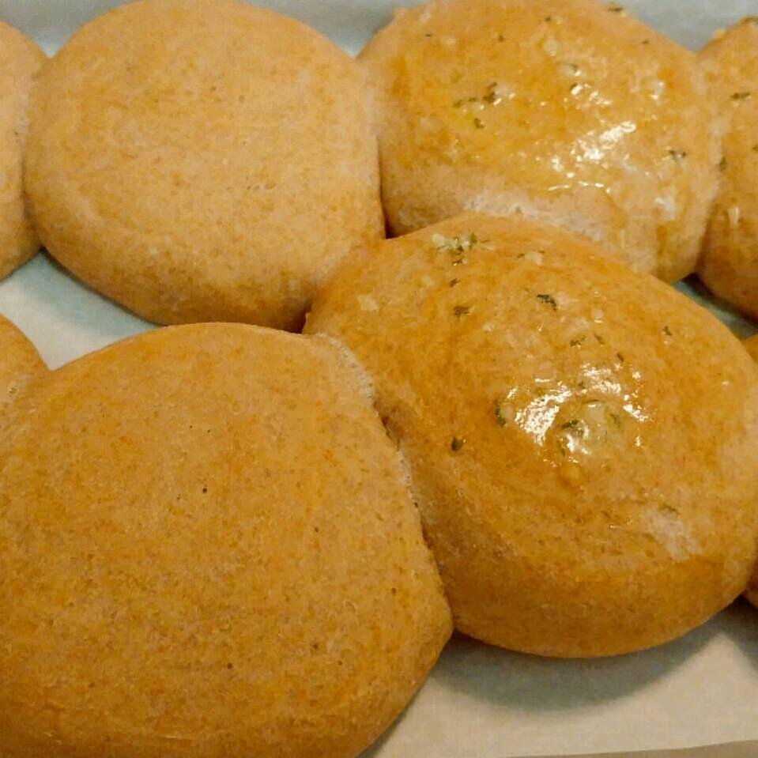

Versatile Bread

Description
This is a wonderfully flavored and versatile bread. You can use it to make focaccia loaves, cinnamon rolls, hamburger buns, or dinner rolls. This recipe makes bread baking a snap!
Prep: 30 mins
Cook: 30 mins
Additional: 1 hr 45 mins
Total: 2 hrs 45 mins
Servings: 12
Yield: 12 rolls
Ingredients
- 1 (.25 ounce) package active dry yeast
- 1 cup warm water (110 degrees F/ 45 degrees C)
- 2 tablespoons white sugar
- 2 teaspoons salt
- 2 tablespoons vegetable oil
- 2 1/2 cups all-purpose flour
Steps
- In a small bowl, dissolve yeast in warm water. Let stand until creamy, about 10 minutes. Lightly grease two baking sheets.
- In a large bowl, combine the yeast mixture with the sugar, salt, oil and 1 cup of flour; stir well to combine. Stir in the remaining flour, 1/2 cup at a time, beating well after each addition. When the dough has pulled together, turn it out onto a lightly floured surface and knead until smooth and supple, about 8 minutes.
- Lightly oil a large bowl, place the dough in the bowl and turn to coat with oil. Cover with a damp cloth and let rise in a warm place until doubled in volume, about 1 hour.
- Preheat oven to 325 degrees F (165 degrees C). Divide the dough into twelve equal pieces and form into rounds. Place the rounds on prepared baking sheets. Cover the rolls with a damp cloth and let rise until doubled in volume, about 40 minutes.
- Bake in preheated oven for 20 to 25 minutes, or until golden brown. Place on a wire rack to cool.
Home